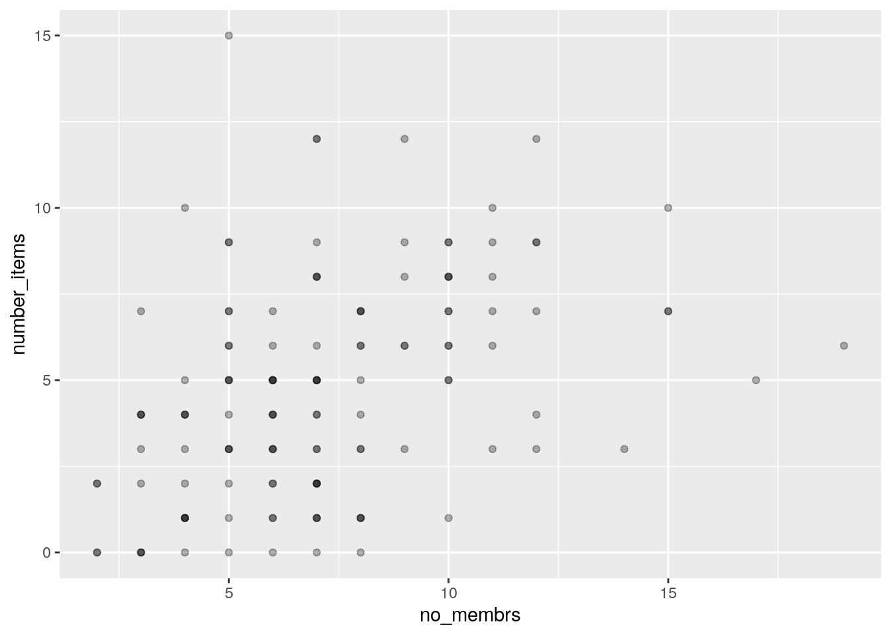

5 Power Analysis using DeclareDesign
DeclareDesign is a system to simulate Research Designs. This is useful for power analysis, because it is often hard to include things like clustering and covariates in standard power calculators.
Resources for learning about DeclareDesign:
- Slides by the authors of DeclareDesign: Graeme Blair, Alex Coppock, Macartan Humphreys
- The DeclareDesign CheatSheet
- The book Research Design in the Social Sciences: Declaration, Diagnosis, and Redesign
Read at least the slides before going forward!
5.1 Diff-in-Diff
Here’s a common situation: I’ve collected some baseline data, and are wondering if our study has sufficient power to pick up expected treatment effects.
I will start off with some fake baseline data, which only contains y0, our outcome
indicator. We use the fabricate() function, from the fabricatr library, which is
loaded with DeclareDesign:
library(tidyverse)
library(DeclareDesign)
rm(list=ls())
set.seed(1)
N = 100
fake_data <-
fabricate(N = N,
y0 = runif(N, 100, 150))
head(fake_data)## ID y0
## 1 001 113.2754
## 2 002 118.6062
## 3 003 128.6427
## 4 004 145.4104
## 5 005 110.0841
## 6 006 144.9195Now, let’s add an extra year to our data, again using fabricate(), just
to demonstrate how, using add_level() and then crosslevels():
fakedata_years <-
fabricate(fake_data,
years = add_level(N = 2, t = as.numeric(years) - 1, nest=FALSE),
observations = cross_levels(by = join_using(ID, years)))Now it’s time to start declaring our design. The first element of the
design is the model, which essentially is my data, and I declare it
using the same synytax as fabricate()
above. This means you can input existing data, but also generate
random new variables.
The potential outcomes are generated using the potential_outcomes().
This will create two variables Y_Z_1 and Y_Z_0, which are
the potential outcomes if assigned to treatment (Z == 1) or not.
You can see I have created a very simple data generating
process to generate different outcomes in t = 1 for treatment
and control, but you can go absolutely wild here to check the
assumptions you have: you can cluster the outcomes, include
compliance or treatment effectiveness, add more or less noise,
make it depend on both observable and unobservable
characteristics, etc. etc.
year_shock <- 10
effect_size <- 15
sd <- 5
model <-
declare_model(fakedata_years,
potential_outcomes(Y ~ y0 + t * year_shock +
t * Z * effect_size +
t * rnorm(N,sd = sd)))Then it’s time to think about assignment. I need to assign treatment, and reveal the outcomes based on treatment assignment. If treatment had already been known during baseline (not unlikely) then we would have only had to reveal the outcomes:
assignment <-
declare_assignment(Z = cluster_ra(clusters = ID, prob = 0.5),
Y = reveal_outcomes(Y ~ Z)) Next, I declare my theoretical quantity of interest is the treatment effect in year 1. This is useful to check for bias. This is not really needed here, since my model will follow our data generation process exactly, so I could have just skipped this step.
inquiry <-
declare_inquiry(ATE = mean(Y_Z_1 - Y_Z_0), subset = (t == 1)) And finally the estimator with which I hope to estimate the ATE:
estimator <-
declare_estimator(Y ~ t * Z, inquiry = "ATE", .method = lm_robust, term = "t:Z", label = "DiD")Finally, I combine all these elements to declare my design. Note that it’s only here that R starts actually running the code to randomize things. The previous was just declaration!
design <- model + assignment + inquiry + estimator
summary(design)##
## Research design declaration summary
##
## Step 1 (model): declare_model(fakedata_years, potential_outcomes(Y ~ y0 + t * year_shock + t * Z * effect_size + t * rnorm(N, sd = sd)))
##
## N = 200
##
## Added variable: ID
## N_missing N_unique class
## 0 100 character
##
## Added variable: y0
## min median mean max sd N_missing N_unique
## 100.67 124.39 125.89 149.6 13.35 0 100
##
## Added variable: years
## 1 2
## 100 100
## 0.50 0.50
##
## Added variable: t
## 0 1
## 100 100
## 0.50 0.50
##
## Added variable: observations
## N_missing N_unique class
## 0 200 character
##
## Added variable: Y_Z_0
## min median mean max sd N_missing N_unique
## 100.67 132.43 130.95 160.63 14.16 0 200
##
## Added variable: Y_Z_1
## min median mean max sd N_missing N_unique
## 100.67 138.91 138.19 176.27 18.21 0 200
##
## Step 2 (assignment): declare_assignment(Z = cluster_ra(clusters = ID, prob = 0.5), Y = reveal_outcomes(Y ~ Z))
##
## Added variable: Z
## 0 1
## 100 100
## 0.50 0.50
##
## Added variable: Y
## min median mean max sd N_missing N_unique
## 100.67 134.88 134.68 176.27 17.03 0 200
##
## Step 3 (inquiry): declare_inquiry(ATE = mean(Y_Z_1 - Y_Z_0), subset = (t == 1))
##
## A single draw of the inquiry:
## inquiry estimand
## ATE 14.47179
##
## Step 4 (estimator): declare_estimator(Y ~ t * Z, inquiry = "ATE", .method = lm_robust, term = "t:Z", label = "DiD")
##
## Formula: Y ~ t * Z
##
## Method: lm_robust
##
## A single draw of the estimator:
## term estimator estimate std.error statistic p.value conf.low conf.high
## t:Z DiD 15.68729 3.867435 4.056252 7.194547e-05 8.060161 23.31442
## df outcome inquiry
## 196 Y ATEIf you want to browse a version of the data created by your design,
use the draw_data() function. This is useful to examine the properties of the data.
draw_data(design) %>%
head()## ID y0 years t observations Y_Z_0 Y_Z_1 Z Y
## 1 001 113.2754 1 0 001 113.2754 113.2754 1 113.2754
## 2 002 118.6062 1 0 002 118.6062 118.6062 1 118.6062
## 3 003 128.6427 1 0 003 128.6427 128.6427 0 128.6427
## 4 004 145.4104 1 0 004 145.4104 145.4104 0 145.4104
## 5 005 110.0841 1 0 005 110.0841 110.0841 0 110.0841
## 6 006 144.9195 1 0 006 144.9195 144.9195 1 144.9195Now to calculate our power. The diagnose_design() will run our
model 500 times and our power is simply the fraction of times we
find a statistically significant effect.
diagnose_design(design)##
## Research design diagnosis based on 500 simulations. Diagnosis completed in 4 secs. Diagnosand estimates with bootstrapped standard errors in parentheses (100 replicates).
##
## Design Inquiry Estimator Outcome Term N Sims Mean Estimand Mean Estimate
## design ATE DiD Y t:Z 500 14.97 15.02
## (0.03) (0.05)
## Bias SD Estimate RMSE Power Coverage
## 0.05 1.04 0.70 1.00 1.00
## (0.04) (0.03) (0.02) (0.00) (0.00)Looks good! But what if we were too optimistic? We can vary various
parameters of our design, and test all combinations by using the
redesign() function. Here I check a few plausible values for
our year_shock variable and the expected effect size.
I’ve set the sims option of diagnose_design() to 100, to reduce
the number of times each variation of the model is run to save me
some time.
set.seed(1234)
diagnosis <-
design %>%
redesign(effect_size = 6:15,
year_shock = c(10,15,20)) %>%
diagnose_design(sims = 100)Now, I want a nice plot. For this I use the
tidy() function to convert the output to a data frame, which
I then pipe into ggplot(). It’s now easy to see that I should
be able to pick up an effect size of 9 in most cases.
diagnosis %>%
tidy() %>%
filter(diagnosand == "power") %>%
select(effect_size,year_shock,power = estimate) %>%
mutate(year_shock = as.factor(year_shock)) %>%
ggplot(aes(x = effect_size, y = power,
group=year_shock, color=year_shock)) +
geom_line() +
geom_hline(yintercept=0.8,linetype=2) +
scale_x_continuous(breaks=seq(6,16,2))